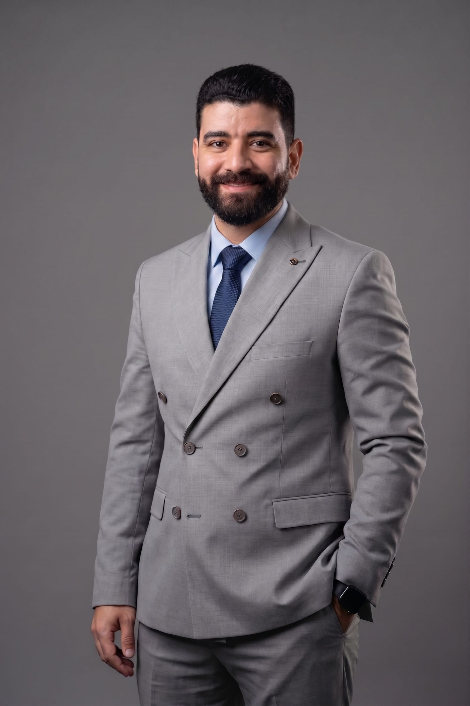
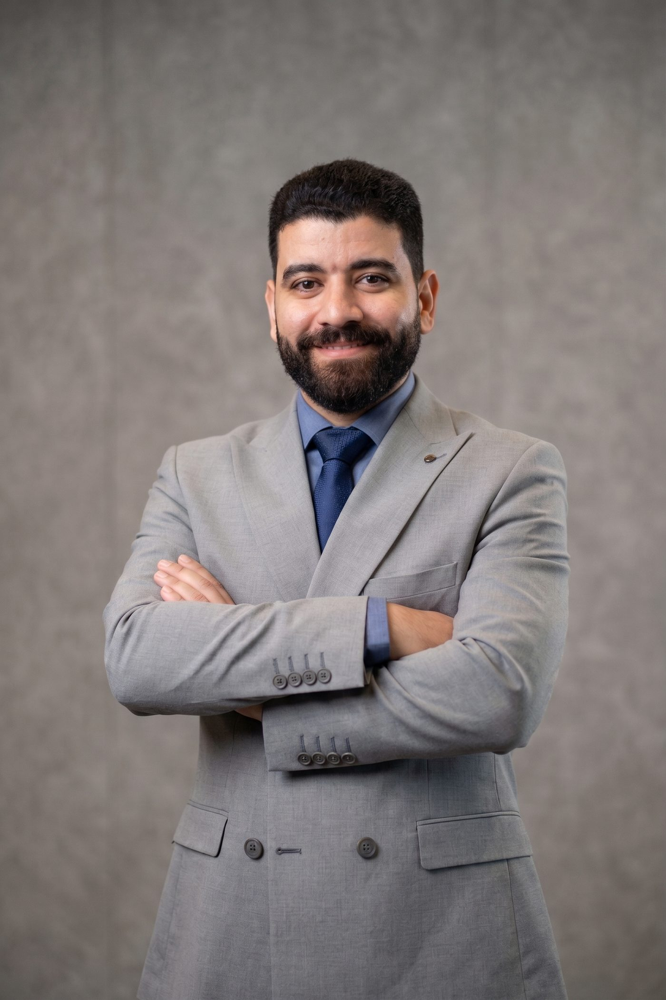

القيادة المالية • FP&A • التحول المالي
أيمن عصام
مدير رقابة مالية للمجموعة. شريك استراتيجي للإدارة. قائد للتحول المالي.
قائد مالي في السعودية أساعد الإدارة على تحويل الأرقام إلى قرارات من خلال رقابة مالية منضبطة، وتخطيط وتحليل مالي عملي، وإدارة التدفقات النقدية، وتحليل الأداء والتحول المالي.
FP&Aالموازنات والتوقعاتالتدفقات النقديةIFRSERP والأتمتة

+700 مليون ريالمبيعات سنوية تحت الإشراف المالي
+13 سنةخبرة في المالية والمحاسبة
+700 مليون ريالمبيعات سنوية تحت الإشراف المالي
+13 سنةخبرة مالية ومحاسبية
6 شركاتإشراف مالي حالي
+7 قطاعاتخبرة متعددة القطاعات
CFM™ · CertIFR®شهادات مهنية

نبذة عني
المالية كأداة لاتخاذ القرار، لا كوظيفة تقارير فقط.
أعمل عبر الرقابة المالية والتخطيط وإدارة الأداء والتحول المالي. هدفي هو بناء وظيفة مالية موثوقة وسريعة ومرتبطة بالأعمال، وقادرة على دعم الإدارة بقرارات واضحة وفي الوقت المناسب.
الوظيفة المالية القوية يجب أن توضح ما حدث، ولماذا حدث، وما المتوقع حدوثه، وما الإجراء الذي يجب أن تتخذه الإدارة.
القطاعات
خبرة مالية عبر نماذج أعمال متنوعة.
الاتصالات
السفر والسياحة
التجزئة
الصناعة
خدمات الأعمال
العقارات
المقاولات
جهات مختارة
شركات وجهات عملت معها أو دعمتها خلال مسيرتي المهنية.
خبرات وعلاقات عمل مهنية عبر قطاعات الاتصالات والسفر والتجزئة والصناعة وخدمات الأعمال والعقارات والمقاولات والضيافة والأغذية والمشروبات.